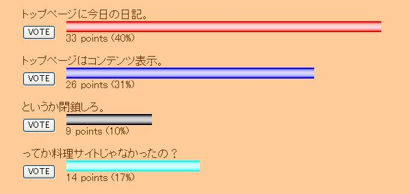
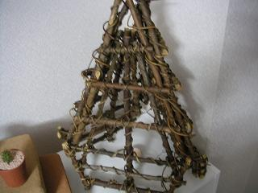
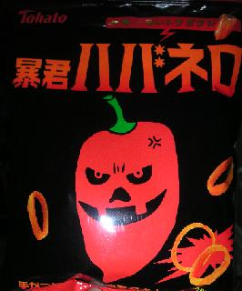

日々、想ふ
〜過去感じたことがつれづれと〜
（できるだけ最大化してお読みください）
一覧へ
ソニックマニア。１/３１
芥川受賞作「蹴りたい背中」を早く読みたい、タケユキです。
サークルの友達に連れられて
ソニックマニア行ってきました。
ソニックマニアってのは簡単に言うといろんなバンド（主に海外バンド）が
同じ会場で順々にライブを行うイベント。
昼の１２時くらいから始まって夜９時くらいまでのかなり長いイベントでした。
パンク系とかの集まりなんで席があるわけでなく
みんなステージ近くで人とぶつかりまくりのかなり激しいもんでした、
かなり筋肉痛になるんじゃないかと。
俺は海外バンドはそこまで興味があったわけじゃないんですが、
SHAKALABBITSが
出るってのもあったんで行ってみた。
超すごかった。
SHAKALABBITSはボーカルがUKIって女の子なんだけど、
かっこよかった。
ただただかっこよかった。
女の子でかっこいいって思わせるような子はそうはいないもんで。
これからさらにシャカラビ熱が燃え上がりそうです。
このソニックマニア、海外バンドがメインのライブだったわけだけど、
どのバンドもMCの時、
「コンニチハーミナサン」
「盛リ上ガッテイキマショウ」とか、
ぎこちないとはいえ難しい日本語を話してた。
特に日本語うまいバンドがあったのが印象に残ってて帰りの電車で友達に、
「あのバンドマジ日本語うまいよね〜」って言ったら、
「え？あれは日本のバンドだぞ？」今日の言い訳：だって歌詞全部英語じゃんけ（汗）
エース。１/３０
メールの最後に読点「。」がない時、
「俺とメールするのだるいんかなぁ」無駄に繊細な男、タケユキです。
今体育でテニスをやってます。
今日はサーブの練習。
周りはみんな初心者ばかり（って俺もだけど）、
ここでレベルの違いを見せ付けねばなりません。
初心者とはいえ毎週「
エースをねらえ」を見てる俺、
塾で教えてる高校生がテニス部の俺、
下手なわけがありません。
サーブの練習一番手となりコートに立つ。
コートの隅を見据え、ボールを握る。
周りはただただ俺を見つめる。
静寂の中、構え、
ボールを真上に投げる。
スッ・・
ブンッ！
そう、「スパーン！」でもなく「バンッ」でもなく、
「
ブンッ！」だったんです。
超恥ずかしかった。
今日の教え子から教えてもらったこと：「エースをねらえ！」の"エース"は
"チームのエース"とかの"エース"じゃなくて
テニス用語の"エース"らしい。
（テニスで相手のミスとかじゃなくて
自分が打った球が
得点になるようなことをエースって言うらしい）
賞味期限。１/２９
今放送中のドラマ「
エースをねらえ」、
試合のシーンがどうしても少林サッカーと重なって見えてなりません、
いくらなんでもその振り方でそんなすごい打球は飛ばねえだろ。
でも上戸彩主演なんで見続けます、タケユキです（ドラマは出演者命
でもストーリーも大事）。
今日なんとか腹痛から回復。
日曜から続く腹痛は昨日が峠だったみたいです。
腹痛の原因は
俺の料理か先週食べた生ガキか、
他に心当たりあるのは賞味期限が一日過ぎた納豆。
これ食べたのが昨日なんでたぶんこいつが昨日のひどい腹痛の原因。
かなりひどかったんで昨日は家にいたっていうより
トイレにいたって表現の方が正しい模様。
って納豆お前もともと発酵してんだから一日くらいどうにかならんものか。
賞味期限はけっこう大事なんだと思った。
今日のドラマ：そういや白い巨塔のなにわ大学って阪大がモデルって誰かに聞いた。
つかめ、人の心。１/２８
明日のテストに向けて今日こそ必死に勉強、できたらいいなぁ、タケユキです。
昨日バイト先で店長に接客論について語られました。
*************************************************
とにかくお客さんに気に入られるのが第一。
例えば帰ったお客さんから「財布忘れてませんでしたか？」って
電話が来たとしてもなかったからってすぐに「ありません」って言うんじゃなくて、
「じゃあちょっと探してみます」って電話いったん切って、
５分くらいしてからかけ直して、
「探したんですけど見つからなかったんですよ〜」
そうするだけでも印象が全然違う。
人に接する仕事ってのはとにかく相手の心をつかまんとあかんねん。
*************************************************
店長が初めて大きく見えた。
その話の前にシフト決めてて店長に「この日（テスト前日）入れへんか？」って
聞かれて、ちょっときついって話しながらも
まあ何とかなるかって入ることになったことを思い出した。
俺の心もつかまれてるーー。
今日のお腹：空腹でもないのにまたグルグルいいだした。
多少なりとも。１/２７
タイトルの通りです、タケユキです。
多少なりともおもしろいこと書こうと思ったんですが、
なにぶん帰宅したのが午前１時、
明日１限はサボれない授業なもので、
多少なりともおもしろい日記は明日お昼までに更新することを誓う形で、
本日の日記を締めさせていただきたく存じている次第でございます。
今日のHP企画：
ポカリスエットは２月から買え。
勉強時間。１/２６
テスト勉強中なわけです、タケユキです。
学校終わって夕方帰宅、それから
７時から「プライド」第一話（録画）見て、
こたつにふで箱置いて、
８時から「プライド」第二話（録画）見て、こたつに教科書置いて、
９時から「プライド」第三話見て、こたつにノート置いて、
１０時から「スマスマ」見て、教科書開いて、
１１時から「あいのり」見て、ノート開いて、
１２時から「すぽると！」のマンデーフットボール見てました、
勉強しながら。
今日の勉強：これでも勉強時間は４時間だと思う。
脱力。１/２５
体調不良で機嫌も悪い、あんまり俺に近づくな、タケユキです。
一人暮らしの家に体温計があるわけもなく
熱があるかも分からないまま一日を過ごしています、
トイレいきてえ。こんな憂鬱な日はテストが終わってから
やりたいこと考えて
気分だけでもどうにかしたいと思います。
- 川に石を取りに行く。
- こたつを撤去し部屋を完全なアジアンに。
- スキューバダイビング。
- スノボー。
・・列挙したら余計に気力がなくなりました。
テスト勉強せにゃ・・。
今日の日記：脱力感はしっかりお伝えできたと思います。
形だけ更新。１/２４
午前１時にバイトから帰宅、
こたつにはいってたらいつの間にか
寝てて今午前５時。
それでもとにかく寝いです、タケユキです。
てなわけでおやすみなさい。
今日の俺：とにかく眠い。
開票。１/２３
タクシーにはねられた日ある日の空。
壁紙サイズなんで気に入った人は壁紙にどうぞ。
写真素材系サイトです、タケユキです。
今日は教えてる高校生が風邪で休みってことで
塾のバイトが休みになったんで
久しぶりにミュージックステーション見ながら更新してます。
なんかモー娘。のメンバー二人が風邪で欠席らしい。
誰がいないのかわからない。
ってかもうメンバー全員をフルネームで言えない。
ついに俺もおっさんかといったところです。
十日くらい前の日記でこのHPにこれからについてアンケート取ったんですが、
現時点までで以下のような結果になってます。

現状維持って意見と以前の形に戻すって意見とあったんですが、
微妙な差とはいえ現状維持の票が多かったんで
とりあえずこのままでいこうと思います。
ちなみに下二つの「というか閉鎖しろ」と「ってか料理サイトじゃなかったの？」
この二つはギャグでつけたんですが、
意外に票が伸びたのに微妙な気分。
特に「というか閉鎖しろ」に投票したやつ、ある程度目星がついてるので覚悟しとけ。
今日の言い訳：今日から料理サイトはすこしお休み。
手作りオブジェ。１/２２
今日は特に予定のない日、タケユキです。
というわけで前にタクシーにはねられたことで
夢半ばでついえた「川に石を取りに行く」を
決行しようと午後に家を出ました。
ちなみに玉砂利は玄関に敷き詰めようかと思ってます。
今部屋を"アジアン"もしくは"エスニック"をコンセプトに少しずつ改造中。
しかし外に出た瞬間、突風が吹きつけ遠くの川まで行く気力も
あっという間に飛ばされました、ってか今日寒すぎ。
それで川に行くのはあきらめ予定変更、
アジアンっていうのは木（not加工木材but自然木）だと思ってるんで
自然木買ってきてオブジェ作りました。

中でロウソクつけるとこんな感じに。

意外にこっちの道の才能あるかもしれません。
今日の材料：木とロウソク合計３３０円。
下準備。１/２１
日付変わる０時から３時まで鍋をした、タケユキです。
眠いっちゅーねん（今朝８時）。
昨日テスト勉強をおろそかにし、
内心どうでもよくなりテストへ。
まあなんとかなるだろうと甘く見ていたら、
解答用紙を見て愕然とした。
白紙の紙が一枚・・。
黒板に「〜について自由に論じよ」の文字。
こんなテスト内容なら
ポジショニングをしっかりしていても意味がない。
テスト勉強してないわけだから書けるわけもない。
「もうこんなテスト知らんわ！」
テスト中ずっと寝ようかと思ったその時、
持ち込み可のテストであることを知った。
・・・テヘ☆
今日の失敗：たまにはこういうこともある。
勉強。１/２０
テスト勉強に追われ中、タケユキです。
明日は二つテストあるんで
時間はいくらあっても足らない気がするんですが
マリオカートが僕をつかんで放しません。
恐るべし任天堂。
これからテストとかで忙しくなりそうなので
ちょっと日記の文章短くなりそうです。
今日の秘密：実は三日くらい前から
想ひ出一つ増えてる。
課題。１/１９
課題やるんで今日の日記は今日の怒りを
一言述べて終わりたいと思います、タケユキでした。
今日の一言：俺のハーゲンダッツ勝手に
食ったやつ絶対許さねえ。
センター試験二日目。１/１８
年末地元の友達にもらったお菓子、暴君ハバネロ、

その辛さ、殺人級、
個人的には二口くらいで致死量、タケユキです。
二日目のセンター試験ついに終了。
今年の問題ももう公開されてることですし、
この一年で自分がどれだけ落ちぶれたか、
はたまた力は維持されているのか、
とりあえず世界史を解いてみた。
世界史には他の教科と違い特別な思い出がありまして、
高校３年間やった世界史よりセンター初日終わったあとから
悪あがき猛勉強しただけの
現代社会の方が点数がよかったということがありまして、
まあそんなことを思い返しながらテスト開始。
・・・
・・・・
・・・・・45点。
なんだ、あんまり変わってないじゃないか。
今日のテスト：こんな点数高三の１２月にも出てたじゃん。
センター試験初日。１/１７
朝友達にがんばれメールを送るためだけに
午前八時起床、試験前に気を遣わせてはいけないので
返事を返す必要のないような完結的文章で送信。
でも試験が終わった後に「終わったよ」的なメールは欲しかった（涙）、タケユキです。
別に所詮俺なんてその程度のもの。
話は変わりますが今日病院行ってきました。
事故で怪我したわけじゃなかったんですが
ぶつけたのが腰だったんでもしものことがあったらヤバイと思い
不安と共に整形外科へ。
結果、異常なし。
ここに国益が失われなかったことを声高らかに
宣言したいと思います。
本気で心配してくれた人、
おもしろがって爆笑した人、
「日記のネタできたね」と励ましてくれた人、
無傷と聞いて物足らないと思った人、
迷惑をかけました。
まだちゃんと生きていそうです。
今日知ったこと：腰を痛めたら足にくるらしい。
センター試験前日。１/１６
ついにセンター試験前日になりました、タケユキです。
っ
て別に俺は新たに大学行こうとしてるわけじゃないので
実際関係あるわけではないけども。
もうあの日から一年経ったのかと思えないほど
大学に入ってからの時間の流れは速くて、
「やべえよ、センター来週にならんのかよ！」
そんな風に焦ってたのがほんの少し前のことに思える。
でも短いと感じる一年も、思い返してみれば
サークル作ったり、デジカメ売ったり、
チャリで広島まで帰ったり、京都観光行ったり、
確かに一年の重みがそこにある。
そんな好き勝手やった一年と、
もう一度挑戦しようと決意した浪人生の一年、
同じ一年でも全然違う
はず。
その前の一年は同じような一年のはずなのに。
明日のセンター試験も去年と同じように英語からスタート。
センター試験はまだ合格までの一つ目の難関だけど、
みんながみんなうまくいくわけじゃないけど、
せめて俺の友達がうまくいくことを願う、強く。
がんばれ、受験生。
今日のオチ：でも今日ここ読んでる受験生はうまくいかないと思う。

{kind=link}